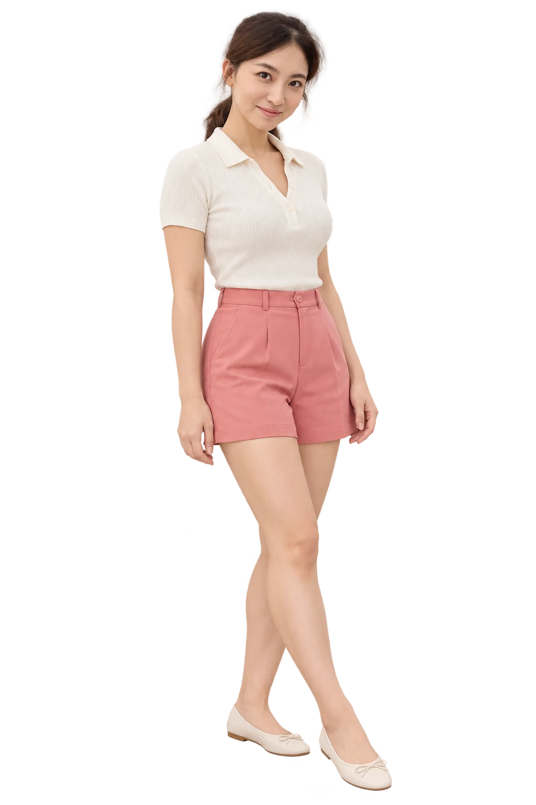
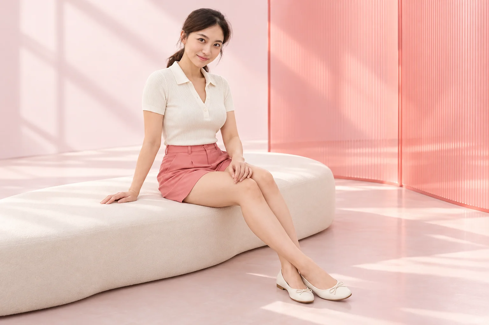

근육에 맞춰
발달한 부위와
긴장 정도를 확인합니다.
Beauty Blossom
CALF BOTOX
근육의 균형부터,
나에게 맞는 다리 라인.
발달한 종아리 근육을 세심하게 살피고
라인과 일상의 움직임을 함께 고려합니다.

A line in balance.
같은 종아리 고민도 원인은 다를 수 있습니다.
근육의 크기와 좌우 차이, 평소 움직임을 함께 확인해
나에게 맞는 시술 방향을 상담합니다.
발달한 부위와
긴장 정도를 확인합니다.
눈에 보이는 라인과
근육의 균형을 살핍니다.
운동·보행 습관을 고려해
시술 계획을 세웁니다.
KNOW YOUR CALVES
근육·지방·부기는 서로 다른 접근이 필요합니다.
힘을 줄 때 단단하게 도드라지는 부위와 근육의 발달 정도를 확인합니다.
보톡스 상담의 주요 확인 부위피부 아래 지방의 양과 분포가 라인에 미치는 영향을 함께 살펴봅니다.
체형·지방 상태를 함께 상담시간대에 따라 달라지는 붓기나 통증이 있다면 원인 확인이 먼저입니다.
증상과 생활습관부터 확인갑자기 한쪽 다리가 붓거나 통증·열감이 생겼다면 미용 시술보다 진료가 우선입니다.
HOW IT WORKS
보툴리눔 톡신은 근육으로 전달되는 신호를 일시적으로 줄입니다. 발달한 근육의 반응을 살피면서 라인과 기능을 함께 확인합니다.
힘을 주었을 때의 모양과 좌우 차이,
근육의 발달 정도를 살펴봅니다.
제품·용량·주입 부위는 근육 상태와
최근 시술 이력을 고려해 결정합니다.
수 주에 걸쳐 라인과 근육의 반응을 확인하고,
보행 중 불편감도 함께 살핍니다.

Move
in balance.
PERSONAL CONSULTATION
힘을 줄 때 종아리 근육이 유난히 도드라져 보이는 경우
양쪽 종아리 라인이 다르거나 한쪽에 힘을 많이 쓰는 경우
웨딩·여행·운동 일정을 앞두고 충분한 상담과 경과 확인이 필요한 경우
최근 보톡스 제품·날짜·용량, 복용약과 알레르기, 임신·수유 여부, 신경·근육 질환과 보행 불편을 함께 확인합니다.
Care, step by step.
시술 시간과 회복 속도는 개인마다 다릅니다.
나의 생활에 맞는 관리 계획을 함께 세워보세요.
근육·좌우 균형과
시술 이력 확인
제품·용량과
주입 부위 결정
상태에 맞춰 시술 후
일상 관리 안내
라인의 변화와
근력·보행 함께 확인
AFTERCARE
주사 부위를 세게 누르거나 마사지하지 말고, 당일 음주·사우나·격한 운동은 피해주세요.
하이힐은 약 1주일 피해주세요. 힘 빠짐이나 보행 불편이 있다면 무리하지 말고 병원에 알려주세요.
운동 재개와 반복 시술 간격은 상태에 맞춰 상담합니다. 처방약은 임의로 중단하지 않습니다.
멍·부기·통증, 일시적인 근력 저하나 비대칭이 생길 수 있습니다. 통증이나 걷기 불편이 심해지면 병원으로 연락해 주세요. 호흡·삼킴 곤란 또는 전신으로 퍼지는 힘 빠짐이 나타나면 즉시 진료를 받으세요.
QUESTIONS & ANSWERS
보툴리눔 톡신으로 근육에 전달되는 신호를 일시적으로 줄여, 발달한 종아리 근육의 긴장과 부피 변화를 유도하는 시술입니다. 근육의 크기와 좌우 균형, 걷는 습관을 확인한 뒤 적합성을 상담합니다.
종아리의 굵기에는 근육뿐 아니라 피하지방, 부기와 골격도 영향을 줍니다. 힘을 주었을 때의 모양과 일상적인 움직임을 함께 확인하고, 주된 원인에 맞춰 상담합니다.
종아리 보톡스는 근육을 대상으로 합니다. 피하지방이나 부종을 직접 없애는 치료와는 다르므로, 지방이나 붓기가 주된 고민이라면 다른 원인을 먼저 살펴봅니다.
주사 직후 종아리 크기가 바로 바뀌는 시술은 아닙니다. 수 주에 걸쳐 근육의 반응과 라인 변화를 살펴보며, 경과 확인 시점은 의료진이 안내합니다. 나타나는 변화와 속도는 개인마다 다릅니다.
효과는 영구적이지 않으며 제품, 근육 상태와 생활습관에 따라 유지 기간이 달라집니다. 변화가 돌아오는 정도와 근력을 함께 확인해 다음 시술을 상담합니다.
양쪽 근육의 크기와 발달 부위, 사용 제품과 최근 시술 이력을 고려해 정합니다. 제품마다 단위 기준이 같지 않으며, 용량이 많다고 원하는 결과가 더 좋아지는 것은 아닙니다.
주입할 때 따끔함이나 뻐근함이 생길 수 있습니다. 통증에 민감하거나 이전 주사 후 불편했던 경험이 있다면 상담 시 알려주세요. 시술 전 피부 상태를 확인하고 편안하게 받을 수 있는 방법을 안내합니다.
시술 후 상태를 확인하고 일상생활 재개를 안내합니다. 다리에 힘이 덜 들어가거나 걷기·계단 오르기가 불편해질 수 있으므로, 장시간 보행이나 중요한 운동 일정이 있다면 미리 알려주세요.
시술 당일 격한 운동은 피하고, 달리기·등산·종아리 근력운동 재개 시점은 상태에 맞춰 안내받으세요. 병원 기존 안내에 따라 하이힐은 약 1주일 피하며, 힘 빠짐이나 불편감이 있으면 더 쉬고 병원에 문의합니다.
주사 부위 통증·멍·부기, 일시적인 근력 저하나 비대칭, 보행 불편이 생길 수 있습니다. 불편감이 심해지면 병원에 연락하고, 호흡·삼킴 곤란이나 전신으로 퍼지는 힘 빠짐이 나타나면 즉시 진료를 받으세요.
최근 다른 부위에 받은 보톡스의 제품명·날짜·용량, 복용약, 알레르기와 과거 이상반응을 알려주세요. 임신·수유 여부, 신경·근육 질환, 기존 보행 문제도 반드시 상담합니다.
최근 시술 이력과 사용 제품, 전체 용량을 함께 확인해야 합니다. 턱·승모근 등 다른 부위 시술을 예정하고 있다면 진료 시 모두 알려주세요. 반복 시술 간격을 임의로 줄이지 않습니다.
제품과 용량, 양쪽 근육 상태와 진료 내용에 따라 달라집니다. 예약·상담을 통해 시술 범위와 포함 항목, 적용 비용을 확인해 주세요.
뷰티블라썸의원은 서울 마포구 양화로 66, 메디원메디컬센터 6층·8층에 있으며 접수는 6층입니다. 네이버 예약 또는 카카오톡·전화로 상담 일정을 문의하실 수 있습니다.
나에게 맞는 라인,
충분한 상담에서 시작하세요.
나에게 맞는 이벤트를 펼쳐보세요.
Beauty, with care.
피부 상태와 원하는 변화를 세심하게 살피고,
정품·정량과 충분한 설명을 진료의 기본으로 생각합니다.

피부 상태와 일상, 원하는 변화를
함께 살펴 나에게 맞는 진료 계획을 세웁니다.

정품 사용과 정량 원칙을
진료의 기본으로 생각합니다.

개개인의 자연스러운 아름다움을 존중하며,
시술 과정과 관리 방법을 충분히 설명합니다.
Find us.
평일 10:00–20:00
주말·대체공휴일 10:00–16:30
점심시간 없이 진료 · 공휴일 진료는 문의
평일 10:00–20:00
주말·대체공휴일 10:00–16:30
점심시간 없이 진료 · 공휴일 진료는 문의